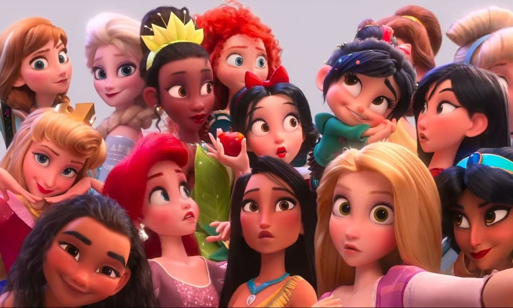

Главная
Манга — японские комиксы, иногда называемые комикку. Манга в форме, в которой она существует в настоящее время, начала развиваться после окончания Второй мировой войны, испытав сильное влияние западных традиций. Однако манга имеет глубокие корни в раннем японском искусстве.
В Японии мангу читают люди всех возрастов. Манга уважаема как форма изобразительного искусства и как литературное явление. Поэтому существует множество произведений разных жанров и на самые разнообразные темы: приключения, романтика, спорт, история, юмор, научная фантастика, ужасы, эротика, бизнес и другие.
Несколько фактов о манге:
- Слово «манга» придумал знаменитый художник Кацусика Хокусай в 1814 году для серии своих гравюр. Означает оно «гротески», «странные (или весёлые) картинки», поэтому термин «манга» относится исключительно к японским комиксам.
- «Аниме» — японская анимация. Само слово «аниме» есть не что иное, как японизированное сокращение от английского animation, причем сам термин появился сравнительно недавно. До этого использовалось выражение «манга-эйга» («кино-комикс») которое до сих пор используют любители аниме старшего поколения.
- Как известно, в Японии читают справа налево. Мангу справа налево читают во всем мире(хотя есть и исключения из этого правила).
- Использовать большие глаза персонажей для передачи эмоций придумали вовсе не в Японии. Осаму Тэдзука, человек считающийся основателем традиций аниме, не отрицал тот факт, что заимствовал этот приём у Уолта Диснея.
- Самый длинный аниме-сериал «Садзаэ-сан» начал выходить в 1969 году по мотивам манги Матико Хасэгавы и его показ не закончен до сих пор. Уже несколько поколений японцев выросли, наблюдая за приключениями Садзаэ и её семьи.
- Самый знаменитый и титулованный в мире режиссер аниме — Хаяо Миядаки. Он также единственный режиссер аниме, который удостоился премии Оскар. На 62 фестивале в Венеции он получил «Золотого льва» за вклад в мировое киноискусство.